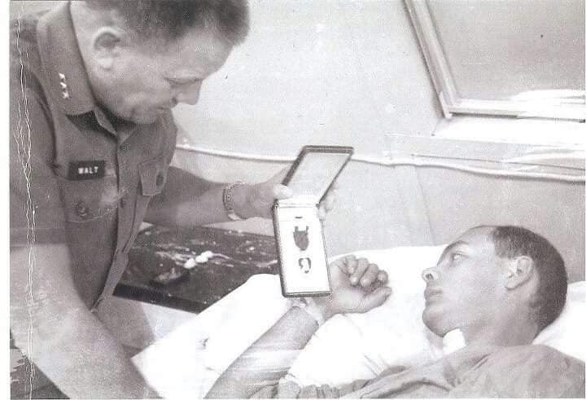
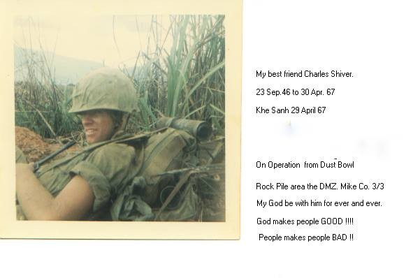
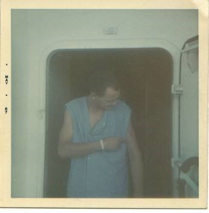
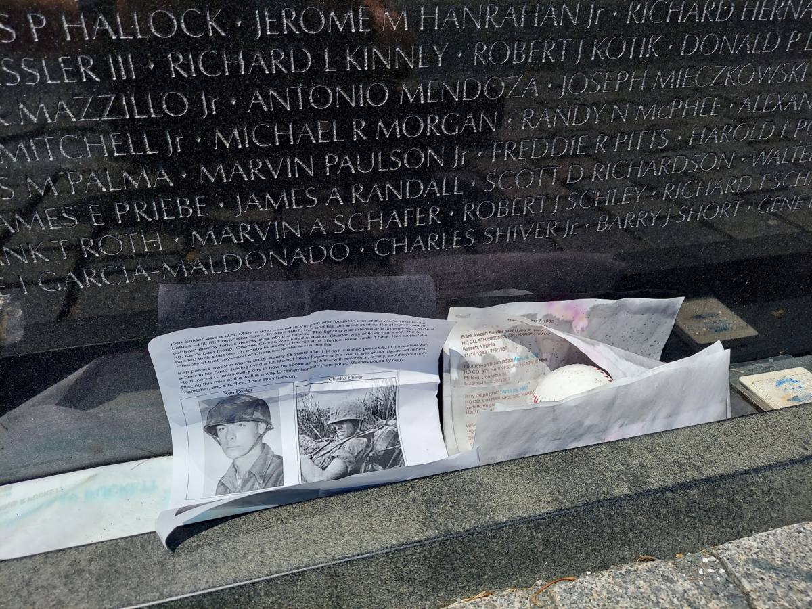
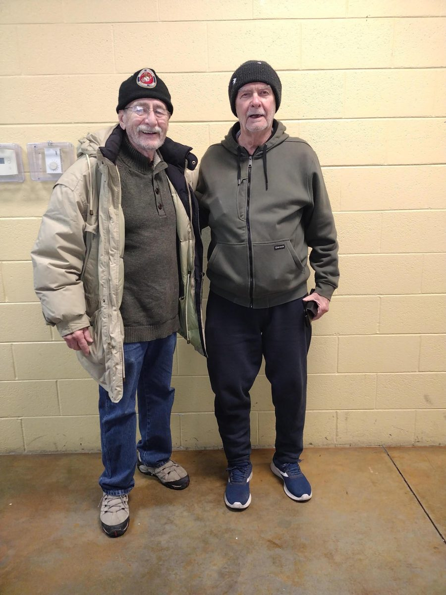
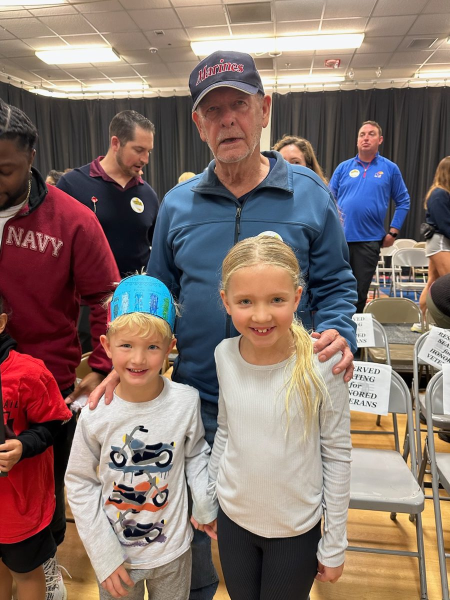

“Service before self” means sacrifice, duty, and often carrying burdens others never fully see.
This Veterans Day, I’m thinking about my dad, Ken Snider, and a part of his life I spent years trying to understand. Dad served in the Marine Corps during Vietnam and received a Purple Heart. He rarely talked about the war. For much of my life, I knew more about the man who came home than the young Marine who had left.
Dad would remind us that the day before Veterans Day was the day to celebrate: November 10, the Marine Corps birthday. Being a Marine stayed with him for the rest of his life.
One name connected those two parts of his life: Charles Shiver.

Two young Marines
Dad joined the Marines right out of high school. Born March 9, 1947, he was 20 in the spring of 1967. Our family’s accounts and a newspaper clipping we previously researched place him in Mike Company, 3rd Battalion, 3rd Marines.
Lance Corporal Charles Shiver Jr. served in that company. Charles was from Wichita Falls, Texas, and he was also 20. To Dad, Charles was a best friend and someone he regarded as a brother.
Their story is connected to the fighting around Hill 881 South near Khe Sanh, in the mountainous northwest of South Vietnam. These were the spring 1967 Hill Fights, before the more widely remembered siege of Khe Sanh in 1968.


April 30, 1967
The Marine Corps histories provide a clearer picture of the battle than the fragments I grew up knowing.
April 29: Mike Company moved into a position northeast of Hill 881 South.
April 30, 8:00 a.m.: The assault began, with Mike Company leading.
About 10:25 a.m.: Marines reached the western portion of the hilltop. Concealed North Vietnamese positions stopped the advance with automatic weapons, sniper fire and mortars.
About 12:30 p.m.: Withdrawal was ordered. Getting the wounded out and breaking contact took hours.
May 2: Hill 881 South was taken after further bombardment.
The Marine Corps’ 2017 history records 27 killed and 51 wounded in Mike Company. April 30 was the costly assault and withdrawal, not the successful capture. Read the Marine Corps history, pages 37–40.
Charles was killed on April 30.
The family account I have shared is that Dad and Charles went up different sides of the hill. I want to preserve that memory without filling in details we haven’t established. I don’t have records identifying their exact platoon assignments or individual movements.
Dad survived. Charles did not.
What he carried home
Dad’s Purple Heart is documented, but I haven’t established the date or circumstances of his wounds. I don’t want to attach that medal to a particular moment in the battle without the records to support it.
After Vietnam, Dad worked for many years as a machine operator at Solo Cup in Springfield. He and my mom raised three children. He supported our sports, worked third shift, and later became Grandpa. These were the parts of his life we saw every day.
The war was harder to reach. In a 2018 letter trying to connect with someone who knew Charles, I wrote that Dad didn’t speak about Vietnam, but Charles was the name we visited at the Wall. Years later, our family continued trying to find Charles’s relatives so they would know that he hadn’t been forgotten.
His name is on Panel 18E, Line 129 of the Vietnam Veterans Memorial. Charles’s memorial record preserves his service and dates.

I named my son Maxwell Charles in his honor. For our family, that name connects the friend Dad lost to a grandson he held in his lap watching Chiefs games.
A lifelong friend
Dad and Jerry grew up together in Billings, Missouri. They were lifelong friends, before the war, through those years, and long afterward. Alongside the friends Dad lost, I want to remember the friendship that remained part of his life when he came home.

Learning more through Darker Than Dark
My brother-in-law, Kevin Kline, helped us discover another connection to Dad’s Marine Corps years: John Admire and his book, Darker Than Dark.
The book helped me better understand the world Dad had experienced and seldom described. It’s a novel informed by actual battles and the author’s service, rather than a literal record of my father’s actions. I haven’t identified a fictional character as Dad.
Admire’s connection to these Marines extended beyond the book. He had transferred before the April 30 assault, but decades later he interviewed survivors and assembled affidavits supporting recognition for men from his former unit. That work helped recover accounts of courage that had gone insufficiently recognized. Read about his work.
Kevin interviewed Admire on The Fuzzy Mic in 2021:
Remembering his service
Dad died on March 6, 2025.
On Memorial Day in 2026, our family attended the Walk of Honor dedication at the National WWI Museum and Memorial in Kansas City. A brick there honors his service. Thanks to Tom Herzog for helping make that recognition possible and for making the day special for our family. My mom and Dad’s brother were there with us.
A brick also honors Dad at the veterans memorial in Billings, Missouri, connecting his memory to the community where he and Jerry grew up.
Closer to home, Dad is remembered with a memorial bench on the Fulbright Spring Greenway in Springfield. Ozark Greenways confirmed its installation on September 5, 2025. It gives our family a place to pause and remember him along the trail.
There is also a brick bearing his name at the Springfield rugby pitch. In December 2022, I arranged pavilion bricks for both of us, with the names Paul Snider and Kenneth Snider and the year 2006. That connection began while Dad was still with us; today it is another place where his name remains part of our family’s story.
I also think about an earlier Veterans Day, when my daughter persuaded Dad to come to her school’s celebration. For someone who rarely talked about Vietnam, showing up meant a great deal to us.

Today I’m grateful for his service, for Charles, and for the veterans whose experiences are still only partly known to the people closest to them. Preserving the names, dates and stories is one way our family can honor them.
Semper Fi, Dad. And to all who have served, thank you.